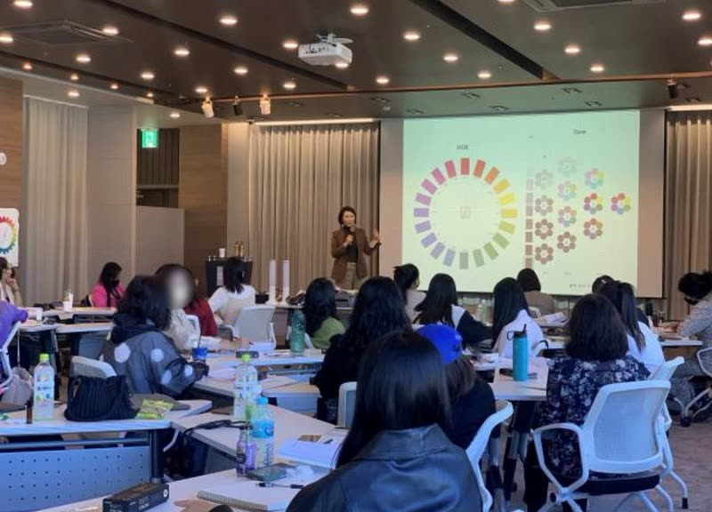

RESEARCH
Research Areas

COLOR
Personal Color Research
Four seasons, 16 types — we diagnose your most flattering colors.

HAIR
Bone Structure & Hair Research
We style hair to match face shape and bone structure.

STYLE
Style Research
We diagnose fabrics, silhouettes, and patterns by body type.